Round values to integers and then display as ordinal values (e.g. 1st, 2nd, 3rd). Built-in rules are provided for English, French, and Spanish.
Usage
label_ordinal(prefix = "", suffix = "", big.mark = NULL, rules = NULL, ...)
ordinal_english()
ordinal_french(gender = c("masculin", "feminin"), plural = FALSE)
ordinal_spanish()Arguments
- prefix, suffix
Symbols to display before and after value.
- big.mark
Character used between every 3 digits to separate thousands. The default (
NULL) retrieves the setting from the number options.- rules
Named list of regular expressions, matched in order. Name gives suffix, and value specifies which numbers to match.
- ...
Arguments passed on to
numberaccuracyA number to round to. Use (e.g.)
0.01to show 2 decimal places of precision. IfNULL, the default, uses a heuristic that should ensure breaks have the minimum number of digits needed to show the difference between adjacent values.Applied to rescaled data.
scaleA scaling factor:
xwill be multiplied byscalebefore formatting. This is useful if the underlying data is very small or very large.decimal.markThe character to be used to indicate the numeric decimal point. The default (
NULL) retrieves the setting from the number options.style_positiveA string that determines the style of positive numbers:
"none"(the default): no change, e.g.1."plus": preceded by+, e.g.+1."space": preceded by a Unicode "figure space", i.e., a space equally as wide as a number or+. Compared to"none", adding a figure space can ensure numbers remain properly aligned when they are left- or right-justified.
The default (
NULL) retrieves the setting from the number options.style_negativeA string that determines the style of negative numbers:
"hyphen"(the default): preceded by a standard hyphen-, e.g.-1."minus", uses a proper Unicode minus symbol. This is a typographical nicety that ensures-aligns with the horizontal bar of the the horizontal bar of+."parens", wrapped in parentheses, e.g.(1).
The default (
NULL) retrieves the setting from the number options.scale_cutNamed numeric vector that allows you to rescale large (or small) numbers and add a prefix. Built-in helpers include:
cut_short_scale(): [10^3, 10^6) = K, [10^6, 10^9) = M, [10^9, 10^12) = B, [10^12, Inf) = T.cut_long_scale(): [10^3, 10^6) = K, [10^6, 10^12) = M, [10^12, 10^18) = B, [10^18, Inf) = T.cut_si(unit): uses standard SI units.
If you supply a vector
c(a = 100, b = 1000), absolute values in the range[0, 100)will not be rescaled, absolute values in the range[100, 1000)will be divided by 100 and given the suffix "a", and absolute values in the range[1000, Inf)will be divided by 1000 and given the suffix "b". If the division creates an irrational value (or one with many digits), the cut value below will be tried to see if it improves the look of the final label.trimLogical, if
FALSE, values are right-justified to a common width (seebase::format()).
- gender
Masculin or feminin gender for French ordinal.
- plural
Plural or singular for French ordinal.
Value
All label_() functions return a "labelling" function, i.e. a function that
takes a vector x and returns a character vector of length(x) giving a
label for each input value.
Labelling functions are designed to be used with the labels argument of
ggplot2 scales. The examples demonstrate their use with x scales, but
they work similarly for all scales, including those that generate legends
rather than axes.
See also
Other labels for continuous scales:
label_bytes(),
label_currency(),
label_glue(),
label_number_auto(),
label_number_si(),
label_parse(),
label_percent(),
label_pvalue(),
label_scientific()
Examples
demo_continuous(c(1, 5))
#> scale_x_continuous()

demo_continuous(c(1, 5), labels = label_ordinal())
#> scale_x_continuous(labels = label_ordinal())

demo_continuous(c(1, 5), labels = label_ordinal(rules = ordinal_french()))
#> scale_x_continuous(labels = label_ordinal(rules = ordinal_french()))

# The rules are just a set of regular expressions that are applied in turn
ordinal_french()
#> $er
#> [1] "^1$"
#>
#> $e
#> [1] "."
#>
ordinal_english()
#> $st
#> [1] "(?<!1)1$"
#>
#> $nd
#> [1] "(?<!1)2$"
#>
#> $rd
#> [1] "(?<!1)3$"
#>
#> $th
#> [1] "(?<=1)[123]$"
#>
#> $th
#> [1] "[0456789]$"
#>
#> $th
#> [1] "."
#>
# Note that ordinal rounds values, so you may need to adjust the breaks too
demo_continuous(c(1, 10))
#> scale_x_continuous()

demo_continuous(c(1, 10), labels = label_ordinal())
#> scale_x_continuous(labels = label_ordinal())

demo_continuous(c(1, 10),
labels = label_ordinal(),
breaks = breaks_width(2)
)
#> scale_x_continuous(labels = label_ordinal(), breaks = breaks_width(2))
